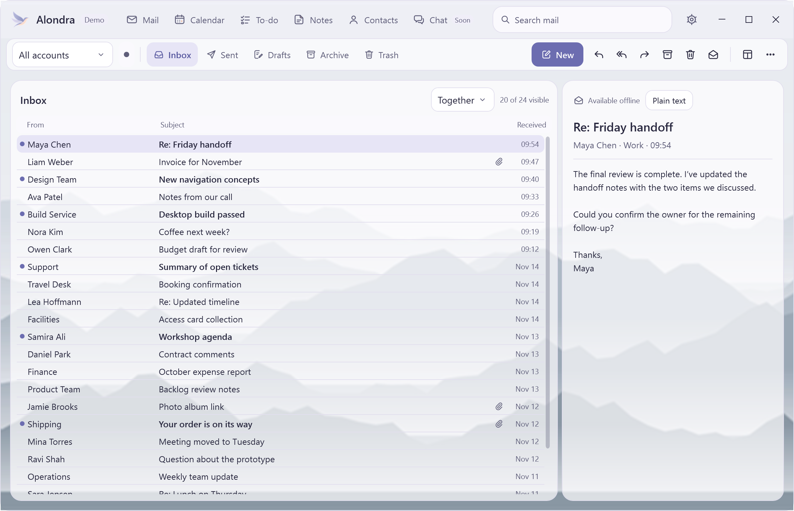
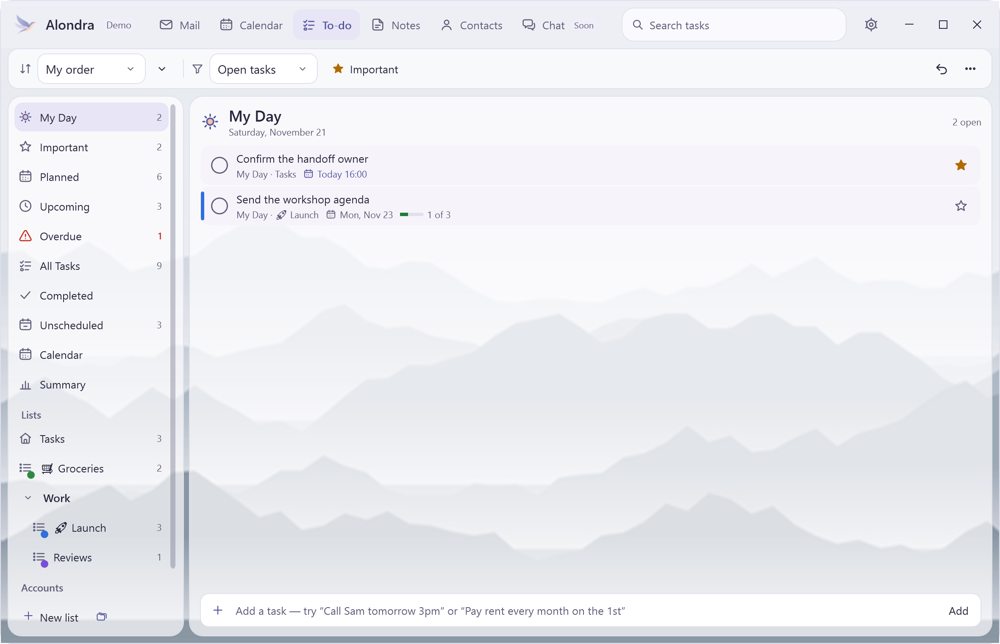
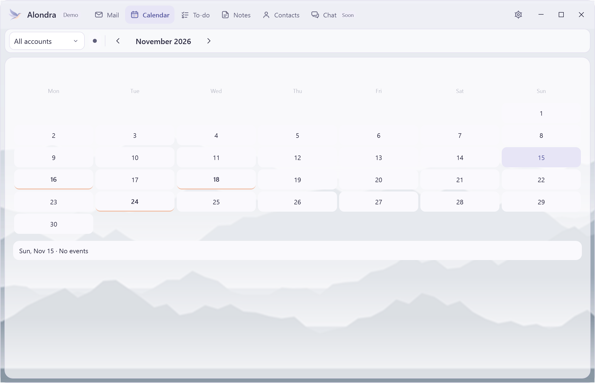
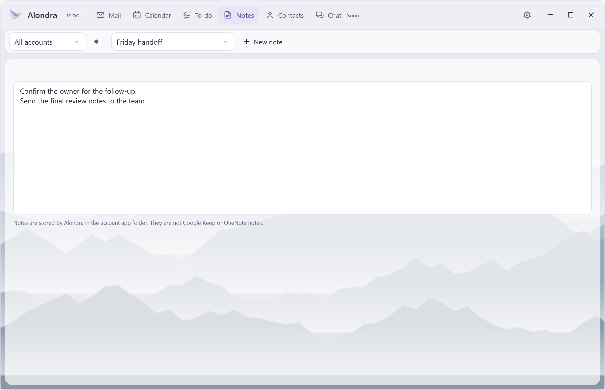

Microsoft 365, Gmail, and any IMAP, POP3, or SMTP provider. Keep each account Online (server only) or Personal (a full offline copy with search). Sending never duplicates a message.
Mail, calendar, and to-do.
Calm, local, yours.
Alondra1 is a lightweight Windows app for your mail, calendar, tasks, notes, and contacts. Your data lives on your PC, and the To-do workspace works with no account or network at all.


Everything in one quiet window
To-do
Lists and groups, steps, due dates, repeats, reminders, natural-language quick add, smart views, a task calendar, undo, and backup, import, and export. All of it works offline.
Calendar, notes, contacts
From your connected Microsoft 365 or Google accounts, side by side with your mail.

Your look
Light and dark themes in the Alondra1 lavender palette, custom colors, and background pictures that are processed on your PC.

Private by design
- Local-first. Settings, local mail, and tasks live on your PC.
- No servers, no telemetry, no ads. Alondra1 connects only to the mail accounts you add.
- Remote images stay blocked until you choose to load them.
Get Alondra1
A per-user setup with no administrator prompt. Updates and uninstalls never touch your data.
Android, iPhone, and Mac versions are planned.